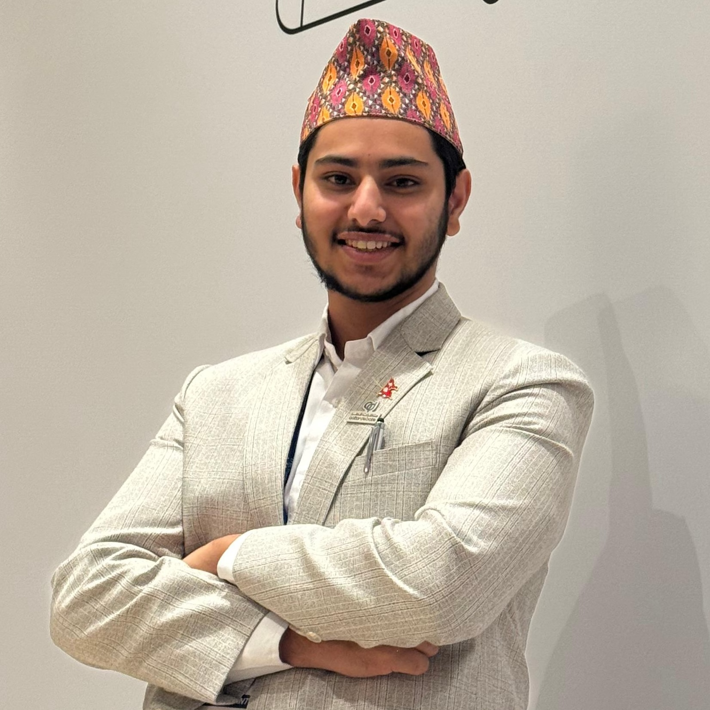

Sparsh
Adhikari
A Researcher, Thinker and Data Science Enthusiast working across Nepali Politics, Economics, and Diplomacy. BSFS '28.

Doha Forum, Qatar 2025
Research minded.
Data curious.
Philosophy geek.
I am currently working as a Georgetown's Center for Research and Fellowship’s Summer Fellow on “Remittance and Household Consumption in Nepal” with Professor lamis kattan. I have also been working as a Student Finance Assistant in the GUQ Finance Office under the guidance of Director of Strategy and Process Improvement, Chris Barrington. As a Finance Student Assistant, I contributed to operational efficiency by supporting data visualization through Excel-based dashboards and optimizing automated workflows for the procurement office. I worked to automate the process of student payments, purchase requisitions, quotations and other procurement related processes. I also developed process documentation and guidebooks and videos to ensure effective system use for our automated systems.
I am interested in pursuing academic research and philosophical inquiries to know about the complex reality we live in. I specialize in quantitative and qualitative research practices. I am skilled to work with R Programming, Stata, Atlas.ti, and Excel. My academic and professional pursuits reflect my commitment to research, data analysis, and understanding global and local socio-economic issues.
Work across disciplines.
Hover to preview · Click to open
Academic Research
A study of urban political discontent in Kathmandu and how it reshapes voter behavior and drives the shift from mainstream parties to alternative movements.
Tracing how growing urban discontent, declining party legitimacy, and alternative movements created the conditions for the Gen Z uprising.
Examines how foreign remittances by amount and source country are associated with household per-capita consumption using NLSS-IV microdata.
Blogs
Drawing from fieldwork on emerging political discontent, this piece analyzes how the Gen Z uprising revealed deeper structural frustrations that parties had long overlooked.
Examining structural exploitation, diplomatic shortcomings, and policy failures — calling for a rights-based foreign policy and stronger embassy accountability.
A journey in four chapters.
Roots
Managed budgeting and financial reporting across 15+ programs, co-handling NPR 2.4M in transactions while overseeing HR, reconciliations, and audit compliance.
Streamlined digital financial tracking using Excel and Google Sheets, maintained audit-compliant records, and supported clerical operations.
Ensured inclusive debate participation across diverse backgrounds and led the amendment and formation of Debate Network Nepal's equity policy.
Taught fundamentals of public speaking and debating while organizing school-wide events and activities.
Led a team of 13 executives and 60+ members, organized Annual EcoDrama, managed club finances, and authored proposals and formal communications.
Georgetown
Builds Excel dashboards supporting procurement and finance workflows while contributing to strategic sourcing, data reconciliation, and documentation control.
Progressed from VP to President, overseeing tournament logistics, conducting weekly training sessions, and facilitating campus workshops on parliamentary debating.
Served as TA for World Geography, mentoring ~62 students and providing academic and social support throughout the program.
Research
Will support Prof. Seungah Sarah Lee's research on entrepreneurialism and society, examining how intermediary organizations broker access to networks and resources.
Awarded a competitive fellowship for an independent study on foreign remittances and household consumption in Nepal.
Conducted 22 semi-structured interviews with voters, politicians, and civil society leaders in Kathmandu. Published findings in The Annapurna Express.
Reviewed Nepal's Policy and Program for evidence-based recommendations, authored articles on GCC labor diplomacy, and analyzed trade datasets.
Community
Delivers ongoing debate coaching and public speaking workshops across Nepal, contributing across multiple roles over 3+ years within the organization.